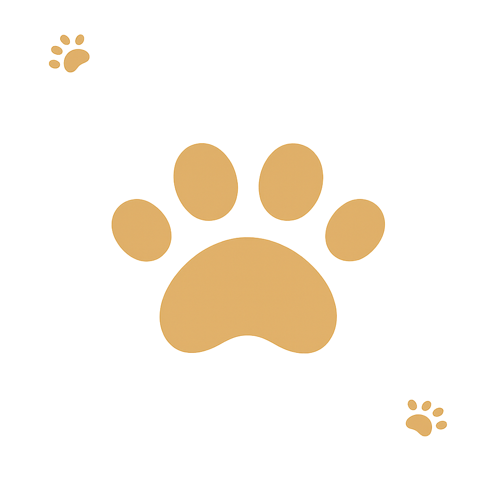

REQUISITOS

La encuesta debe ser llenada única y exclusivamente por el interesado, teniendo en cuenta que éste debe ser quien será el dueño responsable de la mascota. En caso de aceptarse la solicitud de adopción, el interesado será quien se encargará de los gastos de su manutención.
La encuesta sólo puede ser llenada por personas mayores de edad (18+). Las mascotas en adopción son únicamente para casas, habitación y apartamentos, no para cuidar talleres, terrenos, etc.
En caso de aceptarse y realizarse su adopción, la persona que llene el presente formulario deberá hacerse responsable de los gastos y manutención de la mascota que adoptó. No es posible el traspaso a terceros ni adoptar para terceras personas.